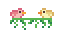

Bem-vindos ao meu Site Musical
Olá, eu sou a Gabriela Souza e nesse site você irá encontrar várias músicas sobre diversas partes da minha vida, desde minhas emoções até pessoas queridas. Ao planejar esse site, decidi não dizer explicitamente sobre o que cada música se trata, porque às vezes tentar pensar no porquê de uma pessoa gostar de algo é diferente de apenas saber que ela gosta - Nesse caso, vamos deixar você adivinhar.
Também existem alguns easter eggs pelas páginas, mas ao invés de falar onde eles estão, vou deixar você procurar.
Caso queira saber mais sobre minhas inspirações, pode olhar a página do trabalho no GitHub. Por agora, espero que se divirta!
